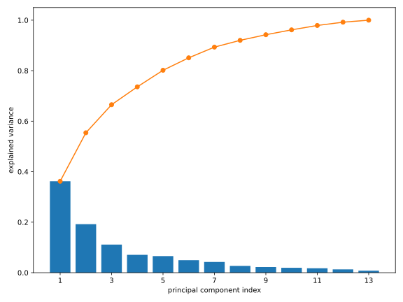
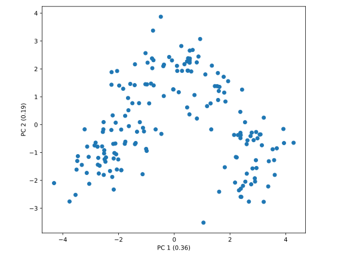
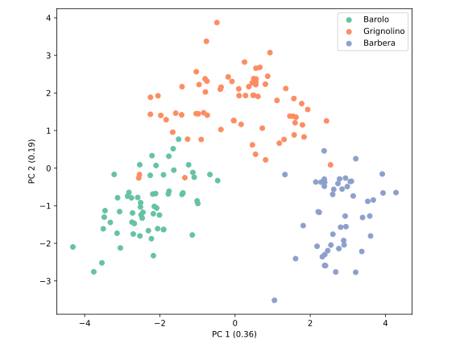

Hauptkomponentenanalyse
Wir betrachten wieder die Singulärwertzerlegung einer Matrix in der Form mit Singulärvektoren und , sowie Singulärwerten (vgl. Gl. (4.6)). Diese Gleichung suggestiert eine Approximation der Matrix durch Abschneiden der Summe nach dem -ten Summanden: wobei wir absteigend sortierte Singulärwerten annehmen, und . Man spricht hier von einer Rang--Approximation der Matrix , da aus der Summe von (linear unabhängigen) Rang-1-Matrizen besteht. Wie gut ist diese Approximation? Eine Antwort auf diese Frage liefert das folgende Theorem, welches erstmals von Erhard Schmidt bewiesen wurde:
Sei eine beliebige Matrix mit der SVD , wobei und . Dann ist die Matrix die beste Rang--Approximation von im Sinne der Frobenius-Norm , also
Die Frobenius-Norm einer Matrix ist definiert als
Der Beweis dieses Theorems erfordert einige Kenntnisse der linearen Algebra, weswegen wir hier auf den Beweis verzichten. Interessierte können ihn z.B. hier nachlesen.
Eckart-Young-Mirsky-Theorem
Leon Mirsky konnte die obige Approximationseigenschaft auf beliebig unitär invariante Normen erweitern. Eine Norm ist unitär invariant, wenn für beliebige unitäre Matrizen und die Bedingung für alle Matrizen erfüllt ist.
Einige gebräuchliche unitär invariante Normen seien hier für mit aufgeführt:
- Die Frobenius-Norm
- die Spektralnorm
- und die Ky-Fan-Norm oder auch Spurnorm
Alle drei Normen sind Spezialfälle der Schatten-Normen.
Das Eckart-Young-Theorem besagt also, dass die SVD nicht nur eine gute Approximation der Matrix liefert, sondern sogar die beste Approximation bis zum Rang bezüglich der Frobenius-Norm ist.
Die SVD liefert uns aber noch mehr als nur eine Approximation der Matrix . Da die Approximation durch die gewichtete Summe von Rang-1-Matrizen erfolgt, kann diejenige Rang-1-Matrix korrespondierend zum Größten Singulärwert als die wichtigste Komponente, die Hauptkomponente, der Matrix interpretiert werden. Der Singulärwert gibt dabei an, wie wichtig diese Hauptkomponente für die Matrix ist. Die weiteren Rang-1-Matrizen mit können dann als die nachfolgenden Komponenten interpretiert werden, mit dem jeweiligen Gewicht . Diese Interpretation führt uns zur Hauptkomponentenanalyse (engl. Principal Component Analysis, PCA), welche in der Praxis häufig zur Dimensionsreduktion von Daten verwendet wird.
Theoretische Grundlagen
Wir betrachten eine Messung von jeweils Merkmalen (engl. features) an Proben (engl. samples), welche durch eine -Matrix repräsentiert wird. Die -te Zeile der Matrix entspricht dabei den Merkmalen der -ten Probe.
Stellen Sie sich als Beispiel eine Messreihe von Proben vor (z.B. bei verschiedenen Konzentrationen), wobei Sie für jede Probe Merkmale messen (Temperatur, Absorption, etc.). Die Datenmatrix repräsentiert dann Ihre gesamten Messdaten, wobei jede Zeile die Merkmale einer Messung enthält.
Wir werden in den folgenden Abschnitten und Kapiteln häufig von dieser Darstellung der Daten ausgehen, da sie die Basis für die meisten Methoden der Datenanalyse und des maschinellen Lernens bildet.
Der erste Schritt der PCA ist die Vorverarbeitung der Daten auf eine der folgenden zwei Arten: Zentrierung oder Standardisierung. Hierzu schreiben wir die Datenmatrix als mit den Messdaten . Jeder Datenpunkt ist also ein -dimensionaler Vektor, wobei die Features die Basisvektoren darstellen. Nun definieren wir den Mittelwert über alle Messungen als Bei der Zentrierung subtrahieren wir von jedem Datenpunkt diesen Mittelwert um die zentrierte Datenmatrix zu erhalten. Man kann sich leicht davon überzeugen, dass die zentrierte Datenmatrix durch gegeben ist, wobei die -Einheitsmatrix und eine -Matrix mit lauter Einsen ist.
Manchmal kommt es vor, dass die Features in unterschiedlichen Größenordnungen auftreten, bzw. in unterschiedlichen Einheiten gemessen wurden. In diesem Fall ist es sinnvoll, zusätzlich zu der Mittelwertsubtraktion auch eine Normierung der Daten durchzuführen. Die Kombination dieser zwei Schritte wird als Standardisierung bezeichnet. Nach der Berechnung der Standardabweichung der -ten Features durch kann die standardisierte Datenmatrix durch berechnet werden. In anderen Worten heißt das, dass die Gesamtheit unserer Messdaten nun Mittelwert 0 und Standardabweichung 1 haben. Je nach Art der Daten muss entschieden werden, ob eine Zentrierung oder Standardisierung durchgeführt werden sollte.
Anschließend berechnen wir die Singulärwertzerlegung der standardisierten Datenmatrix : mit , und . Die Rechts-Singulärvektoren sind die Hauptkomponenten, die auch als loadings bezeichnet werden, während die Singulärwerte die Gewichtung der jeweiligen Hauptkomponente angeben. Gebräuchlich ist noch der Varianzanteil (engl. explained variance) der -ten Hauptkomponente, die durch gegeben ist, wobei die Summe über alle Singulärwerte läuft.
Da die Rechts-Singulärvektoren orthonormal sind, können wir diese als eine Orthonormalbasis des -dimensionalen Raums interpretieren, die möglicherweise eine natürlichere Repräsentation der Datenpunkte darstellt.
Die Projektion der Datenpunkte auf die Hauptkomponenten kann durch das Matrixprodukt berechnet werden. Demnach ist die Projektion der Datenpunkte auf die -te Hauptkomponente durch das Produkt des -ten Links-Singulärvektors mit dem -ten Singulärwert gegeben. Diese Projektion wird auch als score der -ten Hauptkomponente bezeichnet.
Zwar ist die Transformation der Datenpunkte in die Basis der Hauptkomponenten bereits ein nützliches Werkzeug, die Hauptkomponentenanalyse kann aber auch zur Dimensionsreduktion verwendet werden. Die Idee ist dabei, dass wir nur die ersten Hauptkomponenten behalten und die Datenpunkte in den -dimensionalen Raum dieser Hauptkomponenten projizieren. Dank des Eckart-Young-Theorems wissen wir, dass diese Projektion immer die beste Beschreibung der ursprünglichen Datenpunkte in einem -dimensionalen Raum liefert. Also können wir die PCA verwenden, um einen hochdimensionalen Datensatz mit nur wenigen Hauptkomponenten zu approximieren, ohne dabei zu viel Informationen über die Daten zu verlieren. Wir werden diesen Aspekt im Kontext des maschinellen Lernens in einem späteren Kapitel erneut betrachten.
Implementierung
Wir implementieren die PCA am Beispiel des Weindatensatzes. Dieser enthält Messungen von 13 physikalischen und chemischen Eigenschaften von insgesamt 178 Weinen aus drei verschiedenen Rebsorten: Barolo, Grignolino und Barbera. Die ersten Einträge des Datensatzes haben die folgende Form:
1,14.23,1.71,2.43,15.6,127,2.8,3.06,.28,2.29,5.64,1.04,3.92,1065
1,13.2,1.78,2.14,11.2,100,2.65,2.76,.26,1.28,4.38,1.05,3.4,1050
1,13.16,2.36,2.67,18.6,101,2.8,3.24,.3,2.81,5.68,1.03,3.17,1185
1,14.37,1.95,2.5,16.8,113,3.85,3.49,.24,2.18,7.8,.86,3.45,1480
1,13.24,2.59,2.87,21,118,2.8,2.69,.39,1.82,4.32,1.04,2.93,735
1,14.2,1.76,2.45,15.2,112,3.27,3.39,.34,1.97,6.75,1.05,2.85,1450
1,14.39,1.87,2.45,14.6,96,2.5,2.52,.3,1.98,5.25,1.02,3.58,1290
1,14.06,2.15,2.61,17.6,121,2.6,2.51,.31,1.25,5.05,1.06,3.58,1295
1,14.83,1.64,2.17,14,97,2.8,2.98,.29,1.98,5.2,1.08,2.85,1045
1,13.86,1.35,2.27,16,98,2.98,3.15,.22,1.85,7.22,1.01,3.55,1045
und der gesamte Datensatz kann
hier heruntergeladen
werden. Die Datei wine.csv enthält die Daten im sogenannten
Comma-Separated Values (CSV) Format, also mit Werten, die durch Kommata
getrennt sind.
Als erstes importieren wir die benötigten Bibliotheken
import numpy as np
import matplotlib.pyplot as plt
und lesen die Daten aus der Datei wine.csv ein:
data = np.loadtxt('wine.csv', delimiter=',')
categories = data[:, 0].astype(int) - 1
features = data[:, 1:].astype(float)
Hier haben wir das Argument delimiter=',' an die Funktion np.loadtxt
übergeben, da die Werte in der Datei nicht wie bisher durch Leerzeichen
getrennt sind.
Zudem haben wir die Labels der Rebsorten (nullte Spalte) in der Variable
categories als 0-indizierte Integers gespeichert und somit von den
Eigenschaften der Weine, die wir als Floats in der Variable features
gespeichert haben, abgetrennt.
Weitere versteckte Informationen, wie die Namen der Rebsorten und der gemessenen Eigenschaften, sind für die Mathematik zwar nicht relevant, können aber für die Interpretation der Ergebnisse sehr hilfreich sein. Daher speichern wir diese in Listen:
CATEGORY_LABELS = ['Barolo', 'Grignolino', 'Barbera']
FEATURE_LABELS = [
'alcohol', 'malic acid', 'ash', 'alcalinity of ash', 'magnesium',
'total phenols', 'flavanoids', 'nonflavanoid phenols',
'proanthocyanins', 'color intensity', 'hue',
'OD280/OD315', 'proline',
]
Da sich in diesem Datensatz die Größenordnung der Eigenschaften sehr stark unterscheidet, führen wir eine Standardisierung der Daten durch:
features -= features.mean(axis=0)
features /= features.std(axis=0)
Anschließend berechnen wir die Singulärwertzerlegung der standardisierten Datenmatrix:
u, s, vh = np.linalg.svd(features, full_matrices=False)
pcs = vh.T
proj = u @ np.diag(s)
expl_var = s**2 / np.sum(s**2)
Zusätzlich haben wir die Hauptkomponenten, die Projektion der Datenpunkte auf die Hauptkomponenten, sowie die Varianzanteile bestimmt. Die Ergebnisse sehen wie folgt aus:
print('First principal component:')
print(pcs[:, 0])
print('Explained variance:')
print(expl_var)
assert np.allclose(
pcs[:, 0],
[-0.1443294, 0.24518758, 0.00205106, 0.23932041, -0.14199204, -0.39466085,
-0.4229343, 0.2985331, -0.31342949, 0.0886167, -0.29671456, -0.37616741,
-0.28675223],
)
assert np.allclose(
expl_var,
[0.36198848, 0.1920749, 0.11123631, 0.0706903, 0.06563294, 0.04935823,
0.04238679, 0.02680749, 0.02222153, 0.01930019, 0.01736836, 0.01298233,
0.00795215],
)
Wir sehen, dass zu der ersten Hauptkomponente pcs[:,0], die eine Linearkombination
aller Eigenschaften der Weine ist, die 5., 6. und 11. Eigenschaften
(0-indiziert, also “total phenols”, “flavanoids” und
“OD280/OD315”) mit den (betragsmäßig) größten Gewichten beitragen. Diese Hauptkomponente erklärt
bereits ca. 36 % der Varianz der Daten. Mit der zweiten Hauptkomponente
zusammen können ca. 55 % der Varianz erklärt werden. Die Varianzanteile
können wir mit dem folgenden Code visualisieren:
fig1, ax1 = plt.subplots(figsize=(8, 6))
ax1.set_xticks(range(1, 14, 2))
ax1.set_xlabel('principal component index')
ax1.set_ylabel('explained variance')
ax1.bar(range(1, 14), expl_var, color='tab:blue')
ax1.plot(range(1, 14), np.cumsum(expl_var), 'o-', c='tab:orange')
fig1.tight_layout()
plt.show()
Hier haben wir die Funktion np.cumsum verwendet, um die kumulierten
Summen der Varianzanteile zu berechnen. Der resultierende Plot sieht wie folgt aus:

Da wir Datenpunkte in 2D leicht visualisieren können, plotten wir die Projektion der Datenpunkte auf die ersten beiden Hauptkomponenten:
fig2, ax2 = plt.subplots(figsize=(8, 6))
ax2.set_aspect('equal')
ax2.set_xlabel(f'PC 1 ({expl_var[0]:.2f})')
ax2.set_ylabel(f'PC 2 ({expl_var[1]:.2f})')
scat = ax2.scatter(proj[:, 0], proj[:, 1])
fig2.tight_layout()
plt.show()
Aufgrund der Standardisierung der Datenpunkte auf die Einheitsvarianz
ist es sinnvoll, die Hauptkomponenten gleichermaßen
skaliert zu plotten. Aus diesem Grund haben wir die Methode set_aspect('equal')
auf die Achsenobjekte angewendet. Der resultierende Plot sieht wie folgt aus:

Da die ersten beiden Hauptkomponenten bereits ca. 55 % der Varianz der Daten erklären, können wir davon ausgehen, dass wichtige Strukturen des Datensatzes in dieser 2D-Projektion erhalten sind. In diesem Plot erkennen wir aber zunächst nur einen Halbkreis an Punkten, sowie ein “Loch” in der Mitte. Um die Struktur der Datenpunkte in dieser Projektion besser zu verstehen, können wir die Datenpunkte gemäß den Rebsorten, die wir für die PCA nicht verwendet haben, einfärben:
CATEGORY_COLORS = ['#66c2a5', '#fc8d62', '#8da0cb']
colors = [CATEGORY_COLORS[c] for c in categories]
scat.set_color(colors)
for c, l in zip(CATEGORY_COLORS, CATEGORY_LABELS):
ax2.scatter([], [], c=c, label=l)
ax2.legend()
plt.show()
Anstatt einen neuen Plot zu erstellen, haben wir die Farben der Datenpunkte
mit der Methode set_color des Plot-Objekts geändert. Und um eine Legende
anzeigen zu lassen, haben wir drei leere Scatter-Plots mit passenden Farben
und Labels erstellt. Der resultierende Plot sieht wie folgt aus:

Wir erkennen jetzt deutlich, dass die Datenpunkte, bis auf wenige Ausnahmen, in der 2D-Projektion entsprechend ihrer Sorten gut voneinander getrennt sind. Wir haben also eine Darstellung gefunden, in welcher wir die Rebsorten anhand der physikalischen und chemischen Eigenschaften der Weine leicht unterscheiden (d.h. klassifizieren) könnten.
In diesem Abschnitt haben wir gesehen, dass die Kooridnaten der Datenpunkte in der Basis der Features vollständig bekannt sein müssen, um die PCA durchzuführen. Bei Messdaten ist diese Voraussetzung in der Regel erfüllt, aber was ist, wenn wir Daten mit sehr vielen Features vorliegen haben, z.B. Bilder? Ein kleines Bild mit Pixeln hat bereits 10000 Features, und ein hochauflösendes Bild mit Pixeln hat sogar eine Millionen Features. In diesem Fall würde die Durchführung der PCA auf die Datenpunkte in der Basis der Pixelwerte sehr viel Resourcen benötigen. Es wäre in diesem Fall effizienter, wenn wir den Abstand zwischen den Datenpunkten für die PCA verwendet werden könnten, für den wir nur einen Skalar für jedes Paar von Datenpunkten berechnen müssten. Eine Abstandsmetrik kann auch dann hilfreich sein, wenn keine wirklich sinnvollen Koordinaten für die Datenpunkte vorliegen, wie z.B. bei Texten oder chemischen Verbindungen.
Tatsächlich lassen sich die Hauptkomponenten allein aus solchen Abständen bestimmen. Eine Realisierung bietet die Methode der Hauptkoordinatenanalyse (engl. Principal Coordinate Analysis, PCoA).
Übung
Aufgabe 3: PCA mit Eigengesichtern
In der Vorlesung haben Sie gelernt, dass die Hauptkomponentenanalyse (PCA) eng mit der Singulärwertzerlegung verwandt ist. Nutzen Sie das fünfte und sechste Eigengesicht, d.h. die fünfte und sechste Spalte der Matrix aus der vorherigen Aufgabe, als Basisvektoren für die PCA des Yale B Datensatzes und projizieren Sie alle Bilder der fünften und siebten Person auf diese Basisvektoren. Plotten Sie die Projektionen der Bilder in einem Scatterplot und färben Sie die Punkte nach der Person, zu der das Bild gehört. Was beobachten Sie?